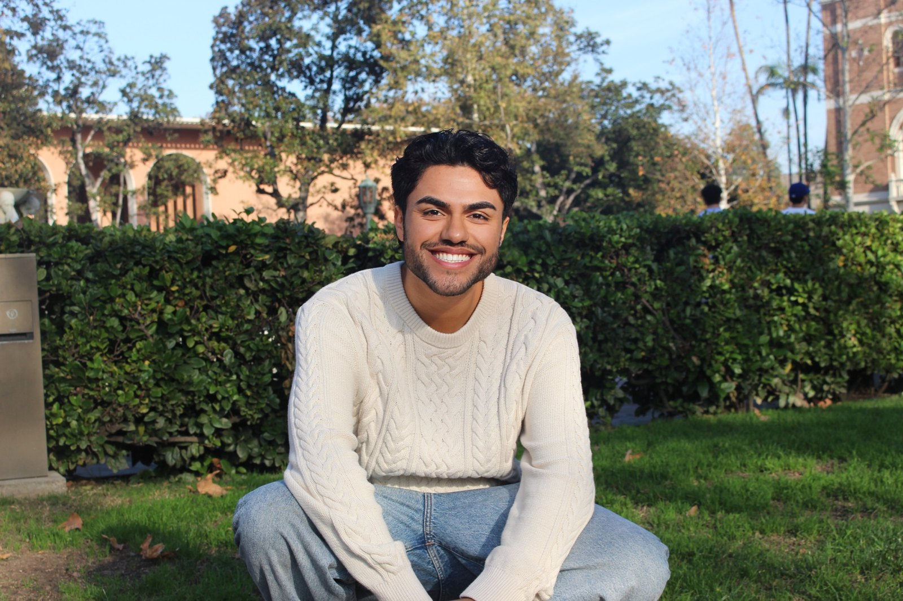
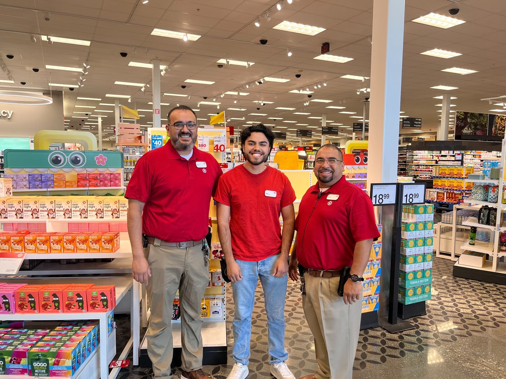

Pai Pai Cruise Growth Plan
A strategy deck focused on converting Ensenada cruise passengers into Pai Pai visitors through stronger booking, social proof, English social content, and cruise-friendly messaging.
View ProjectMarketing • Film • Creative Strategy
I’m a USC Communication Management graduate student building a career in film marketing, creative advertising, brand strategy, and audience-driven communication.

About
I am interested in the intersection of entertainment, marketing, and storytelling. My background includes entertainment marketing, brand strategy, retail leadership, customer-facing communication, and academic consulting projects. I enjoy turning research, audience insights, and creative ideas into clear recommendations that teams can actually use.
Film marketing, creative advertising, brand strategy, and entertainment communications.
USC M.A. Communication Management • UCR B.S. Business Administration
Creative briefs, campaign ideas, strategy decks, audience insights, and bilingual communication.
Experience
Supported creative development and marketing communication for film titles through campaign ideas, social concepts, AV briefs, creative organization, and cross-functional project support.
Built executive-ready strategy recommendations for pricing, packaging, guest experience, marketing, cruise conversion, and online payment improvements.
Supported store operations, fulfillment, customer service, reporting, and team execution in a fast-paced retail environment.
Assisted guests through bilingual communication, customer service, and cultural storytelling in a tourism environment.

Selected Work
A selection of strategy, marketing, communication, and analysis projects. These examples show my work across entertainment, tourism, crisis communication, pricing, and business strategy.
A strategy deck focused on converting Ensenada cruise passengers into Pai Pai visitors through stronger booking, social proof, English social content, and cruise-friendly messaging.
View ProjectA pricing and value recommendation for Pai Pai’s Dreamers package, evaluating price points, perceived value, guest experience, and premium add-ons.
View ProjectA practical plan to reduce reservation no-shows through payment commitment, online payment links, booking tools, and clearer confirmation flows.
View ProjectA recommendation deck using cruise visitor behavior to guide food, pricing, packaging, and trust-building decisions for Ensenada visitors.
View ProjectA personal brand and reputation plan focused on prevention, crisis response, stakeholder trust, and professional communication.
View ProjectA mini financial statement analysis evaluating Meta’s liquidity, leverage, profitability, valuation, strategic priorities, and stakeholder concerns.
View ProjectResume
University of Southern California
M.A. Communication Management
University of California, Riverside
B.S. Business Administration
Creative strategy, campaign research, communication planning, audience insights, project organization, Excel reporting, presentation building, bilingual Spanish/English communication.
Contact
I’m open to opportunities in film marketing, entertainment, creative advertising, communication strategy, and brand strategy.